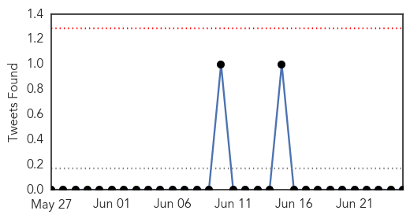
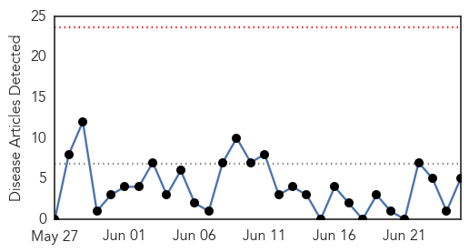

Influenza
30-Day Web Trend
0 alerts, 0 warnings

30-Day Twitter Trend
0 alerts, 0 warnings

Article Locations

Article Confidences

Top Articles:
- 0.996
- Virus mutations: Here’s why scientists say last year’s flu vaccine was a bust - National
- 0.988
- A mutation may explain why last year’s flu vaccine failed for so many
- 0.971
- Health experts warn of severe flu season
- 0.963
- Not too late for flu shot amid severe influenza season, experts say
- 0.963
- It's not too late for flu jab, say doctors
- 0.949
- Ghanaian Media Asked to Spread Awareness of Avian Flu
- 0.923
- Single mutation sabotaged last year's flu vaccine
- 0.751
- June 25, 2015 Archives
- 0.751
- June 24, 2015 Archives
- 0.751
- June 24, 2015 Archives
- 0.751
- June 24, 2015 Archives
- 0.751
- June 24, 2015 Archives
- 0.751
- June 24, 2015 Archives
- 0.751
- June 24, 2015 Archives
- 0.751
- June 24, 2015 Archives
- 0.694
- Bird flu causes cancellation of poultry shows
Top Tweets:
-
No tweets found for Jun 25, 2015
Measles
30-Day Web Trend
0 alerts, 0 warnings

30-Day Twitter Trend
1 alerts, 0 warnings

Article Locations

Article Confidences

Top Articles:
- 0.966
- Doctor Alejan Rafalto How Many Cases Of Measles In The USA
- 0.828
- African Americans Have Much Higher Antibody Responses to the Viral Vaccine
- 0.750
- Measles vaccinations start in Mellit, North Darfur - Sudan
- 0.695
- Island vaccination rates lag
- 0.693
- Unvaccinated Out of Options: Cal Adopts Tough Requirement for Childhood Vaccines
Top Tweets:
-
No tweets found for Jun 25, 2015